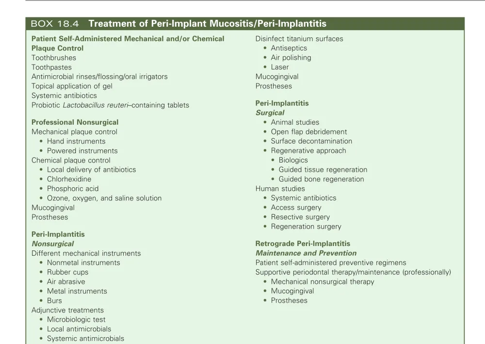
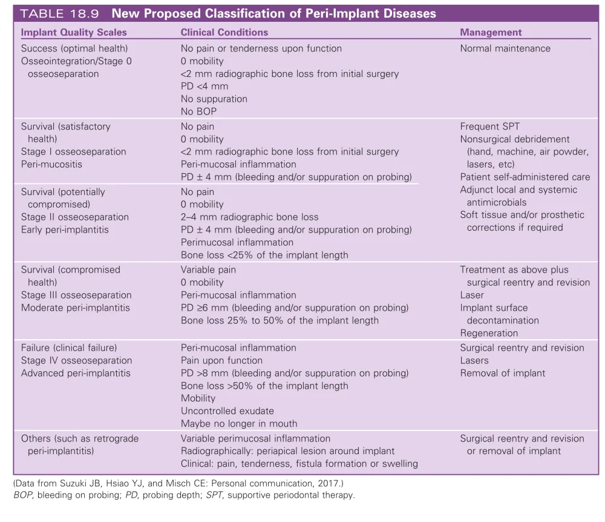

نسخه استخراجشده؛ ترجمه یا تأیید علمی انجام نشده است. وضعیت: captured
درمان پریایمپلنت موکوزیت و پریایمپلنتیت در چهار لایه سازمان مییابد (کادر ۱۸٫۴)، از مراقبت خودِ بیمار تا جراحی.
۱) کنترل پلاک مکانیکی و/یا شیمیایی توسط خود بیمار: مسواک، خمیردندان، دهانشویههای ضدمیکروبی، نخ دندان و ایریگیتور، کاربرد موضعی ژل، آنتیبیوتیک سیستمیک، و قرصهای پروبیوتیک حاوی Lactobacillus reuteri.
۲) غیرجراحی حرفهای:
۳) پریایمپلنتیت — غیرجراحی: ابزارهای مکانیکی مختلف (ابزار غیرفلزی، رابرکاپ، ایرابریزیو، ابزار فلزی، بور)، درمانهای کمکی (تست میکروبیولوژیک، آنتیمیکروبیال موضعی، آنتیمیکروبیال سیستمیک)، و ضدعفونی سطوح تیتانیوم (آنتیسپتیکها، ایرپالیشینگ، لیزر).
به «ابزار غیرفلزی» در صدر فهرست دقت کن. برای پروب یا جرمگیری ایمپلنت، ابزار تیتانیومی یا پلاستیکی پیشنهاد شده است. ابزار روی سطح تیتانیوم میتواند خراش بسازد و پلاک در امتداد همان خراش به زیر لثه مهاجرت میکند؛ پس جرمگیری را با حرکتهای نیمدایرهای موازی سولکوس انجام بده.
۴) پریایمپلنتیت — جراحی:
و بخش پایانی کادر — پریایمپلنتیت رتروگرید، نگهداری و پیشگیری: رژیمهای پیشگیرانهی خودِ بیمار، و درمان پریودنتال حمایتی/نگهداری حرفهای شامل درمان مکانیکی غیرجراحی، موکوژنژیوال و پروتزها.
و اکنون نکتهای که اغلب نادیده گرفته میشود: «در حالی که درمان غیرجراحی پریموکوزیت اغلب موفق است، درمان غیرجراحی پریایمپلنتیت کارآمدی مشکوکی دارد. این به احتمال زیاد بهخاطر ناتوانی در برداشتن بیوفیلم باکتریایی از سطح ایمپلنت اکسپوز است.»
پس مرز درمانی، همان مرز تشخیصی است: تا وقتی استخوان از دست نرفته (پریموکوزیت)، درمان غیرجراحی اغلب موفق است. وقتی سطح ایمپلنت اکسپوز شد — بهویژه اگر سطح زبر باشد — برداشتن بیوفیلم با ابزار غیرجراحی دشوار میشود؛ به همین دلیل مقیاس اسلاید بعد، با پیشرفت بیماری، درمان جراحی را وارد میکند.

بیا با یک انتقاد شروع کنیم: «اکثریت قاطع مطالعات بالینی که موفقیت و شکست را گزارش میکنند، نوع موفقیت بهدستآمده را واجد شرایط نمیکنند. در عوض، اصطلاح موفقیت عمدتاً بهجای بقای ایمپلنت به کار رفته است.»
یعنی «۹۵ درصد موفقیت» در بیشتر مقالات، در واقع «۹۵ درصد ایمپلنت هنوز در دهان است» معنا میدهد. و ایمپلنتی با ۶ میلیمتر تحلیل استخوان و پاکت ۸ میلیمتری هم «در دهان» است.
پیشنهاد جایگزین: «اصطلاح کلی موفقیت در ایمپلنتولوژی باید با مفهوم کیفیت سلامت جایگزین شود، با یک پیوستار سلامت-بیماری که وضعیت ایمپلنتها را توصیف میکند.»
تاریخچه: مقیاس کیفیت سلامت James-Misch پنج سطح داشت و برای هر سطح شیوهی مدیریت هم پیشنهاد میکرد؛ سپس در ۲۰۰۷، کنفرانس اجماع در پیزای ایتالیا (با حمایت ICOI) آن را به چهار وضعیت توصیفکنندهی موفقیت، بقا و شکست اصلاح کرد.
و طبقهبندی نوین بیماریهای پریایمپلنت:
سه مرزی که باید حفظ کنی: ۲ میلیمتر تحلیل، خط میان پریموکوزیت (و موفقیت) و پریایمپلنتیت زودهنگام. ۲۵ درصد طول ایمپلنت، خط میان زودهنگام و متوسط. ۵۰ درصد، خط میان بقا و شکست.
و مدیریت متناظر هر طبقه:
و برای مقایسه، شرایط ایدهآل بالینی دندان طبیعی: نبود درد، کمتر از ۰٫۱ میلیمتر تحرک افقی اولیه تحت نیروی جانبی کمتر از ۱۰۰ گرم، کمتر از ۰٫۱۵ میلیمتر تحرک ثانویه با نیروی جانبی ۵۰۰ گرم، PD کمتر از ۲٫۵ میلیمتر، ارتفاع استخوان کرستال رادیوگرافیک ۱٫۵ تا ۲ میلیمتر زیر CEJ، لامینا دورای سالم.
و جمعبندی کل این یونیت: ایمپلنت بافر یکمیلیمتری بافت همبند را ندارد، تحرکش زیر آستانهی دید است، تحلیل استخوانِ زودهنگامش اغلب مکانیکی است نه میکروبی، و درمان غیرجراحی پس از اکسپوز شدن سطح زبر کارآمدی مشکوکی دارد. هر چهار جمله به یک نتیجه میرسند: در ایمپلنت، پروتکل نگهداری منظم جای علائم بالینی را میگیرد.
